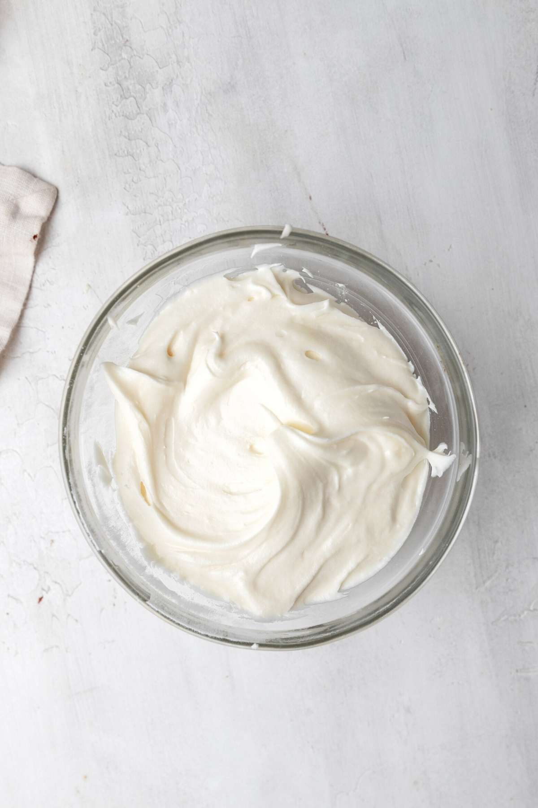
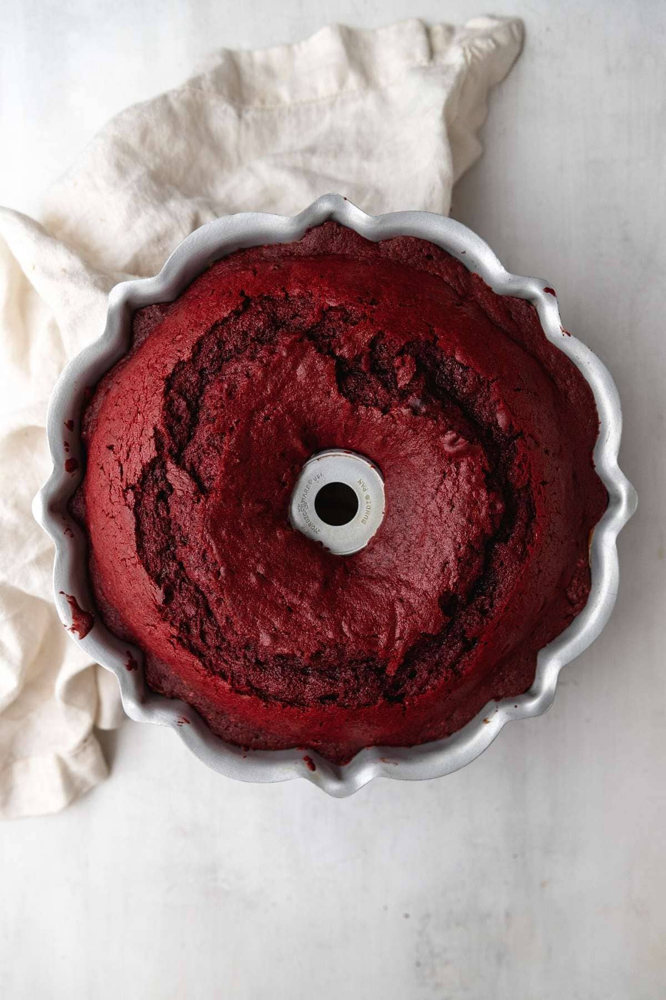
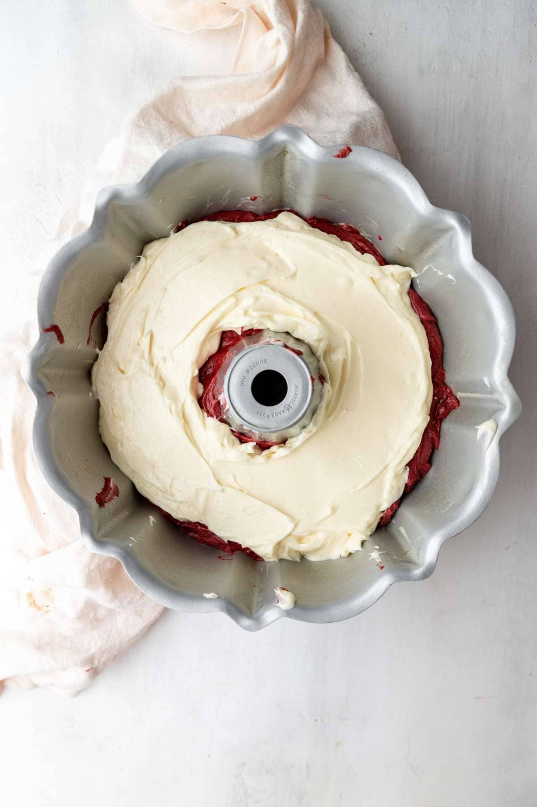
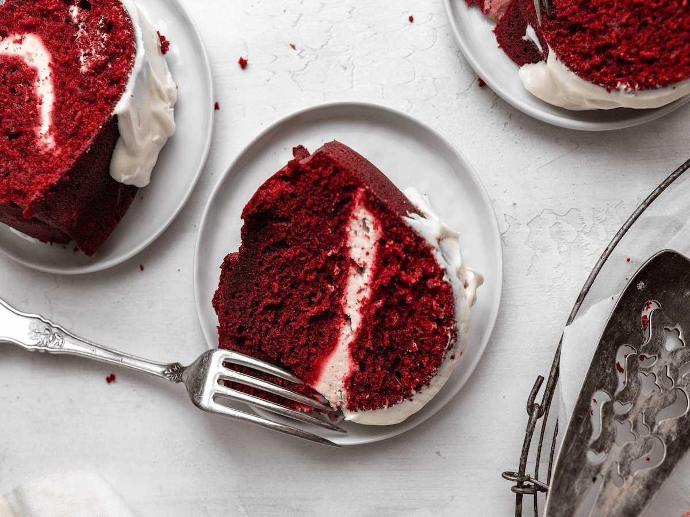

________________________________________
Recipe Information:
Red Velvet Bundt Cake is a moist, classic red velvet cake recipe made with buttermilk and sour cream, topped with cream cheese frosting!
Yield: 12 servings
Prep Time: 25 minutes
Cook Time: 55 minutes
Total Time: 1 hour and 20 minutes
Course: Dessert
Cuisine: American
Author: Sabrina Snyder
Ingredients:
Red Velvet Bundt Cake
2 1/2 cups cake flour
1/3 cup unsweetened cocoa powder
1 teasppoon baking soda
1/2 teaspoon salt
1 cup unsalted butter, softened
2 cups sugar
4 large eggs, at room temperature
1 cup sour cream, at room temperature
1/2 cup buttermilk, at room temperature
1 ounce red food color
1 tablespoon vanilla extract



Cream Cheese Icing
4 tablespoons unsalted butter, softened
4 ounces cream cheese, softened
1/2 teaspoon vanilla extract
3 cups powdered sugar
(Photos from "Red Velvet Bundt Cake" by Sabrina Snyder )
Instructions:
Red Velvet Bundt Cake
Preheat oven to 350 degrees. Spray a 10-inch Bundt pan well with baking spray.
Sift the flour, cocoa powder, baking soda, and salt into a large bowl.
In a stand mixer whisk together the butter and sugar until light and fluffy, then add in the eggs one at a time.
Whisk in the sour cream, milk, red food coloring, and vanilla then add in the flour until just combined with no dry streaks.
Add the batter evenly and bake for 50-55 minutes until a toothpick comes out clean. Cool cake before frosting.
Cream Cheese Icing
To your stand mixer add the butter, cream cheese, and vanilla extract on medium high speed and whip for 2-3 minutes until light and fluffy.
Lower the speed to the lowest setting and add in the powdered sugar until just combined.
Raise speed to medium until fluffy for 30 seconds.
Pour over the cooled cake.

Nutrition Facts:
Calories: 618kcal | Carbohydrates: 86g | Protein: 7g | Fat: 29g | Saturated Fat: 17g | Polyunsaturated Fat: 2g | Monounsaturated Fat: 8g | Trans Fat: 1g | Cholesterol: 135mg | Sodium: 263mg | Potassium: 144mg | Fiber: 2g | Sugar: 64g | Vitamin A: 943IU | Vitamin C: 0.2mg | Calcium: 63mg | Iron: 1mg
(Photo from "Red Velvet Bundt Cake" by Sabrina Snyder )
About me:
Hi there! I'm Meghann De Jesus, and I am a student at Immaculate Heart High School. I just love a good, moist bundt cake, and with the beautiful aesthetic of Christmas, my mind put together the idea of a website combing cake and the color red... and then, simultaneously, my stomach cultivated this craving for Red Velvet Bundt Cake -- especially after seeing the one photo from the home page depicting a nice, good ol' slice of red velvet cake.
________________________________________